Contexto
Es notable —para mí y para cualquiera que mire— el daño que nos está haciendo el scroll infinito. A nosotros, a nuestros hijos, a la sociedad. El contenido cada vez más superficial, y el tiempo que se va sin que nadie pueda decir en qué se fue.
Pero no creo que la salida sea abandonar las redes y aislarnos del mundo. Estar conectados no es el problema.
El problema es la forma en que estamos conectando. Vivimos sobre sistemas diseñados alrededor de la adicción.
Ahí está la diferencia que Kio quiere plantar.
El problema
Kio no quiere que entres a scrollear seis horas sin sentido. Quiere que entres a informarte o a entretenerte, que encuentres algo que te interese rápido, leas algo que te guste, y te vayas con información nueva. De lo intangible a lo fáctico.
Eso implica dos apuestas. La primera: volver a las palabras y al texto antes que al video — que parece haberse convertido en el único formato donde la información puede vivir. La segunda: darle a quien escribe las herramientas para expresarse, tanto literaria como gráficamente.
Por eso en Kio los artículos son libres de temática y de diseño. Esa libertad es exactamente lo que vuelve difícil el problema de la card.
Mi rol
Esta idea tiene más de diez años dando vueltas en mi cabeza. Taringa fue mi mayor inspiración: la primera versión era construir un lugar para leer y escribir cosas casuales, invocando la sensación de leer una revista. Una lectura casual, pero interesante.
Con los años vi cómo la idea dejaba de ser una linda idea y empezaba a responder a casi una necesidad social, en un momento de parón tecnológico. Ahí dejó de ser un sueño y nos pusimos manos a la obra.
Me encargué del diseño al 100%. El recorrido fue largo: desde una carpeta con hojas oficio y pantallas dibujadas con regla, a pantallas en Canva, a los primeros mockups sin ninguna estructura en Figma, a construir el design system entero —pantallas responsive, flujos, happy y unhappy paths, anotaciones y animaciones para los desarrolladores— y a trabajar codo a codo con el equipo de programación para pulir cada detalle.
Ocho épicas, tres roles
Kio se diseñó como un producto de tres roles —quien escribe, quien lee, quien entra sin registrarse— sobre ocho épicas: acceso, onboarding, maker, lector, home, perfil, búsqueda y las fundaciones técnicas. Cada una con sus flujos, sus caminos felices y sus caminos rotos.
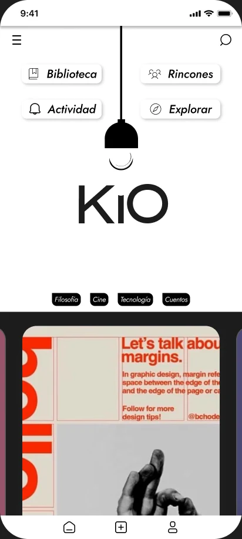
Home — una tapa por vez, sin grilla que invite a saltar
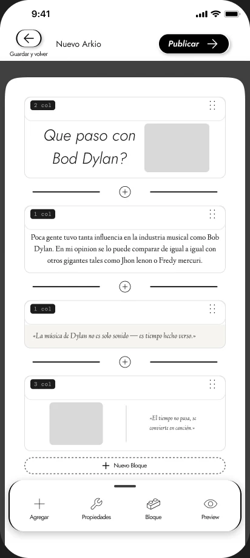
Maker — el editor por bloques, con el texto en primer plano
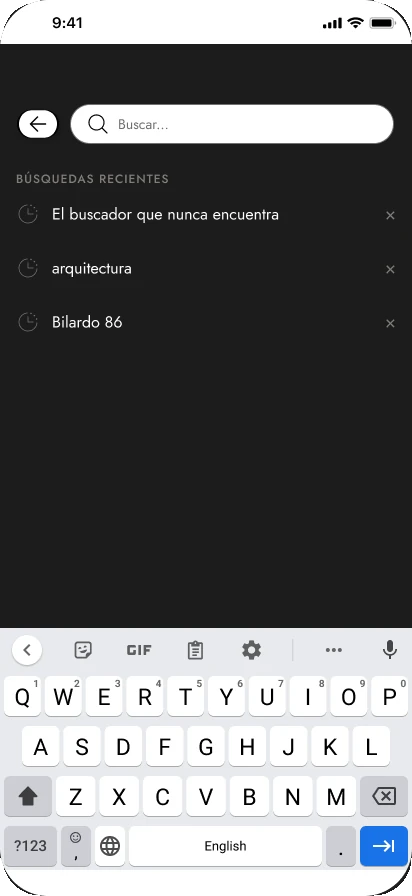
Búsqueda — recientes y resultados
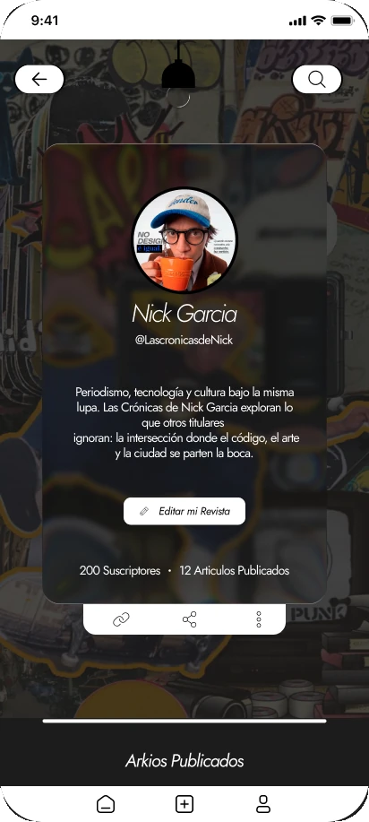
Perfil — la revista de cada autor
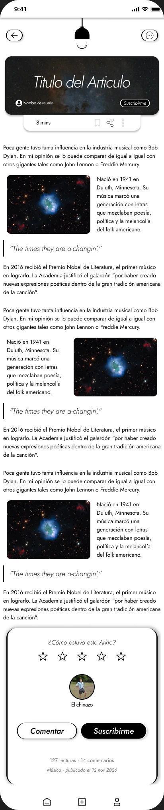
La decisión central: cómo se ve un artículo en el feed
Kio tiene una tensión en el centro, y aparece entera en la card.
El escritor tiene que sentirse él mismo: si la plataforma le impone un estilo, publica peor o directamente no publica. El lector, en cambio, necesita reconocer un objeto que entienda y pueda digerir — tiene que haber una marca conceptual de la plataforma. Las dos cosas se pelean. Cuanto más carácter tiene la card, menos lugar le queda al autor; cuanto más libre es el autor, menos se parece una card a la otra y más se rompe el feed.
La regla que salió de ahí: homogeneidad en el continente, heterogeneidad en el contenido. Todo lo que es estructura —dónde va la información, qué se garantiza, cómo se comporta la grilla— es de la plataforma y no se negocia. Todo lo que es expresión —la portada, el tono, el arte— es del autor y no se toca.
Con esa regla, la exploración dejó de ser una búsqueda estética y se volvió un test. Cada variante intervenía el trabajo del autor en distinto grado.
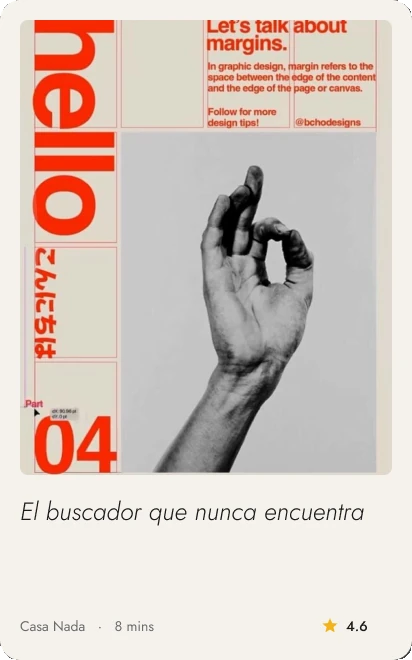
B · Marco — el arte enmarcado, editorial
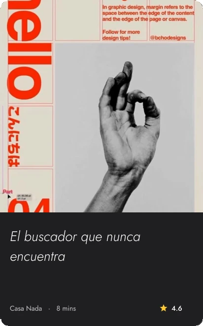
C · Split — panel sólido de marca
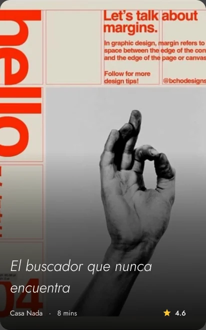
D · Scrim — full-bleed con scrim garantizado
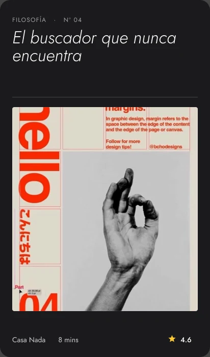
E · Ficha — el titular manda
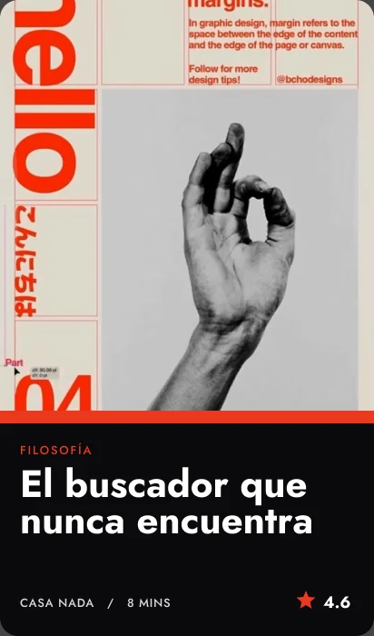
F · Brutal — brutalist editorial
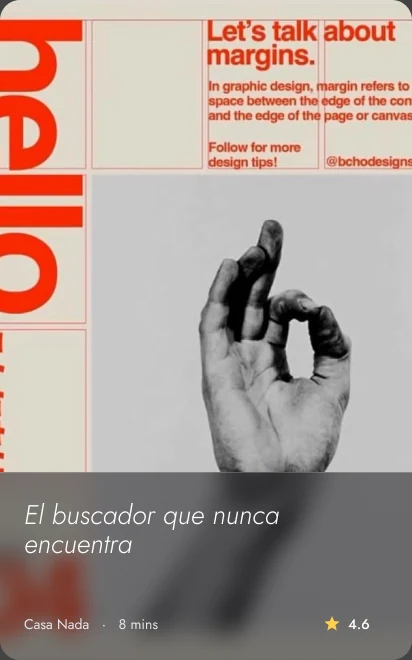
G · Frosted — vidrio sobre la tapa
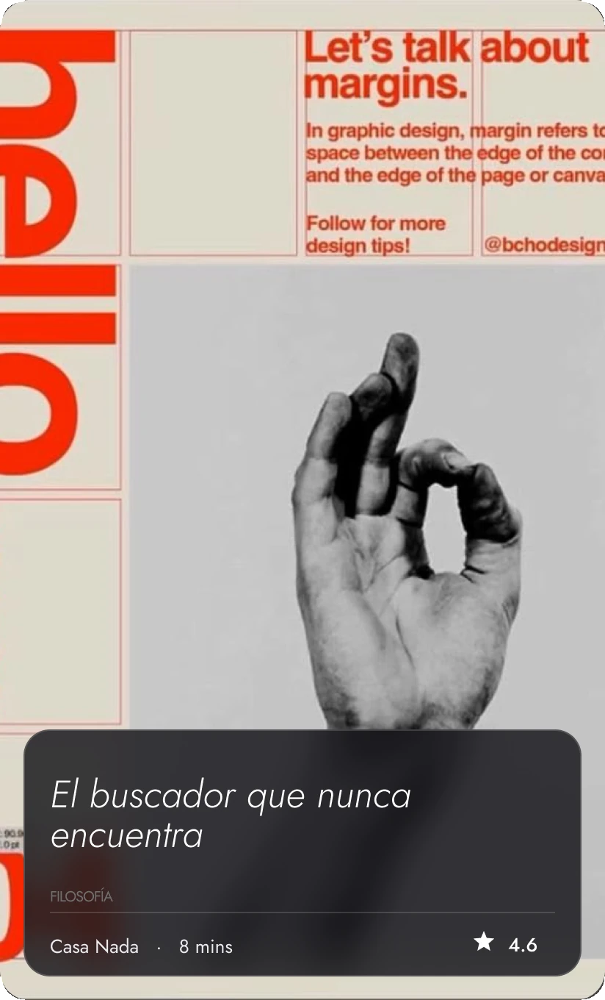
El costo de esta decisión
Si la plataforma no impone estilo, la calidad del feed depende de las portadas de los autores: una portada mala da una card mala, y no hay diseño de plataforma que la salve. Lo único que se puede garantizar es que se entienda. Es un riesgo asumido a cambio de que nadie sienta que su trabajo vive dentro del estilo de otro.
Los estados: donde la marca habla por sí sola
Para mí los estados son el único lugar donde la marca habla por sí sola.
Pensalo así: en un modo de uso normal, Kio refleja lo que el lector o el escritor buscan. Es una carcasa. Es en los estados —vacíos, de error, pantallas inesperadas— donde Kio tiene la oportunidad de ser sí misma: de no mostrar a otro, sino de mostrarse a sí misma.
Por eso importan tanto. Si un producto, sin nada que mostrar, sigue mostrando carácter, ahí es donde nace una marca con identidad. El happy path lo diseña cualquiera; los estados son la firma.
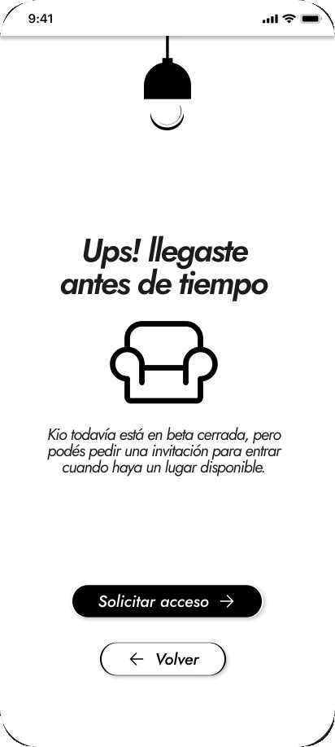
Lista de espera — «Ups! llegaste antes de tiempo»
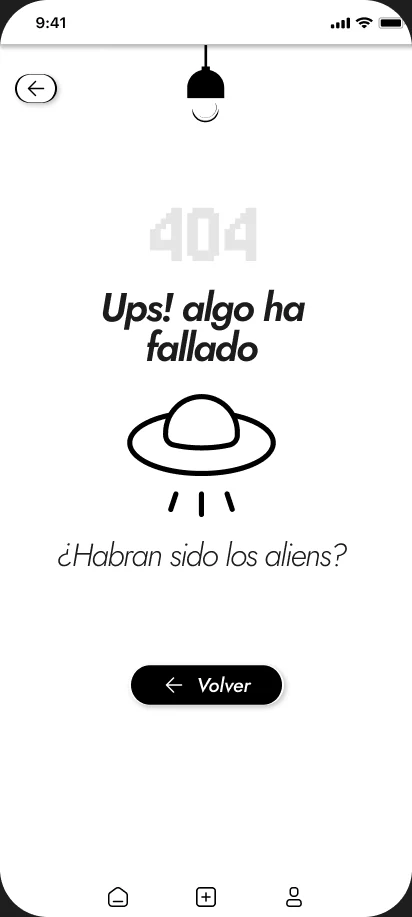
Error — «¿Habrán sido los aliens?»
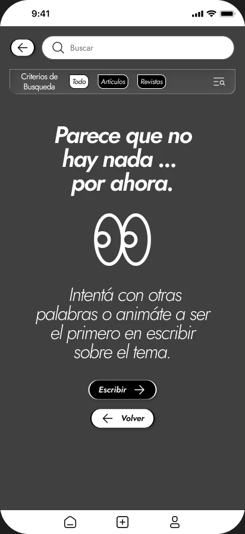
Búsqueda vacía — «Parece que no hay nada… por ahora»
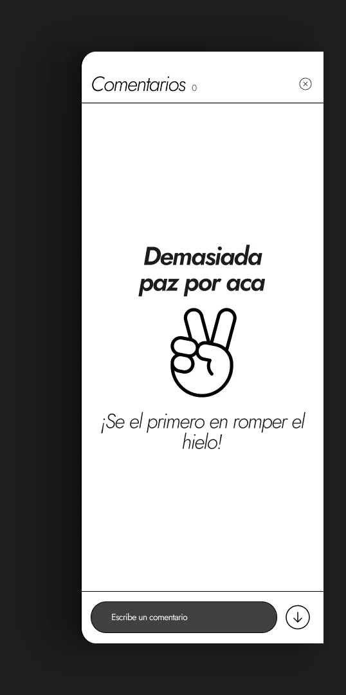
Sin comentarios — «Demasiada paz por acá»
El design system
El sistema se construyó en Figma, se pasó a código, y hoy vive empaquetado en un pipeline en Azure DevOps que vamos actualizando a medida que el producto crece. Más de 100 componentes — 250 si se cuentan las variantes —, tokens semánticos, tema claro y oscuro, y la librería publicada como fuente de verdad para diseño e ingeniería.
Vive como sección de este caso y no como un caso aparte, por una razón simple: un design system no es un logro en sí mismo. Es lo que un producto necesita cuando crece. Contarlo separado sería mostrar el andamio y no el edificio.
Decisiones de alcance
El MVP 1 recortó muchísimo. Somos un equipo chico, joven, y la mitad no tenía experiencia previa: saber recortar, y entender qué secciones importantes no eran el core, fue uno de los procesos más difíciles del proyecto.
Secciones enteras —Biblioteca, Explorar— que en mi cabeza siempre fueron centrales chocaron con una maraña de base de datos, gestión de acceso de usuarios y guardado del artículo en JSON que reclamaban prioridad. Lo que parecía accesorio resultó ser la fundación, y lo que parecía el corazón tuvo que esperar.
Qué aprendí
Aprendí que a veces lo importante no es el core, y que el core suele vivir en lo que no te das ni cuenta de que está ahí. Es casi invisible.
Y aprendí algo más grande, que me cambió la forma de diseñar: un espacio digital tiene la misma capacidad de influencia que un espacio físico. Es como entrar a una casa y sentir que algo no cierra, o entrar a un colegio y sentir que el lugar tiene vida. Los espacios digitales también cargan una energía, una dinámica.
Por eso lo clave es entender qué dinámica querés expresar. Si diseñás únicamente con fines estéticos, vas a transmitir únicamente energía estética — y para una marca, eso no es un objetivo.
Saber qué querés transmitir importa más que saber cómo querés que se vea.
Y una última, más terrenal: todo es mucho más complicado de cerca que de lejos. Si te alejás, todo se ve liso. Cuando estás ahí, en el canvas de Figma peleándote con una variable o con los registros DNS, todo se ve bastante más arrugado y empinado. Triste, pero real.